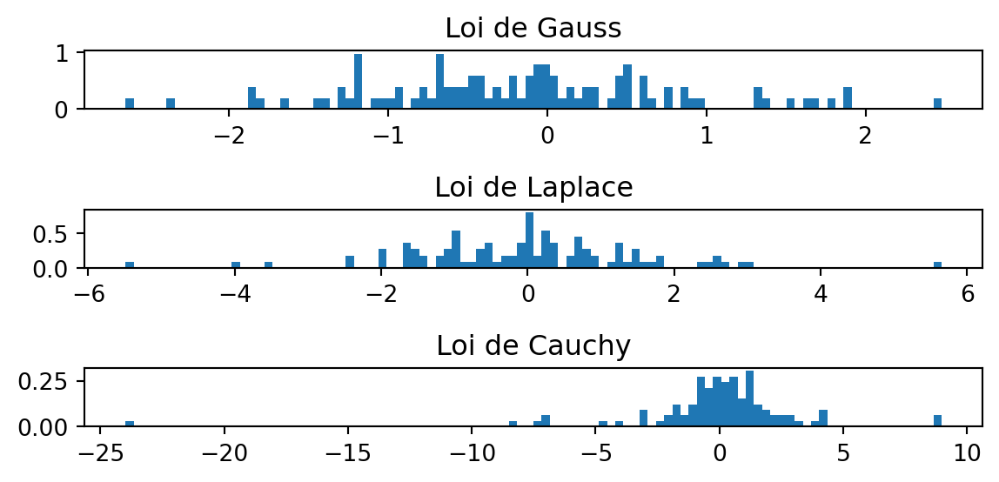

# %%
# Début de cellule
print(1 + 3) # commentaire en ligne
# %%
# Une autre cellule
print(2**3) # commentaire en ligne4
8(+,-,*,/,**,@), etc., savoir créer une fonction, générer un graphique clair et lisiblenumpy.Python est un langage ouvert qui permet de manipuler des données, faire des analyses statistiques, tracer des graphes, et bien d’autres choses encore. Il est distribué gratuitement et vous pouvez le télécharger et l’installer sur une machine personnelle. Dans ce premier TP, on présente les bases de Python.
Pour plus de détails on pourra consulter les ouvrages:
Tout est déjà installé sur les ordinateurs de l’université. Cette section n’est utile que si vous souhaitez utiliser votre propre machine.
Le conseil principal, est d’installer VSCode et d’utiliser l’extension Python associée. Pour Python, privilégier Conda (ou Mamba) pour installer les packages, voir par exemple: installer-anaconda.
On travaillera sous VSCodium (une variante de VSCode) sur les machines de l’Université, un éditeur de texte qui permet de travailler avec Python, mais aussi avec LaTeX, Markdown, R, etc.
Remarque: Une alternative est d’aller dans le menu “View/Command Palette” (accessible avec ctrl + shift + p), et taper “Extensions : install extensions” et installer l’extension “Python, extension for Visual Studio Code” (proposée par Microsoft). Au besoin, il faudra recharger (reload) VSCodium. Si vous avez déjà installé l’extension Python sur votre machine personnelle, vous pouvez passer cette étape.
La même opération devra être faite pour installer l’extension “https://open-vsx.org/extension/ms-toolsai/jupyter” (proposée par Microsoft,) qui nous permettra de manipuler des fenêtres interactives:
HAX603X_tp1.py, et sauvegarder le dans un dossier HAX603X.shift + enter dans une cellule délimitée par les symboles \# \%\%. On peut aussi lancer la cellule en cliquant sur le bouton “run cell” dans VSCodium (ou clique droit puis une option de type “run cell” ou “run all cell”).# %%
# Début de cellule
print(1 + 3) # commentaire en ligne
# %%
# Une autre cellule
print(2**3) # commentaire en ligne4
8Cliquer dans VSCodium sur la version de “Python” en bas de votre écran et choisir sur les machines de l’école l’environnement ‘datascience’ (version: 3.10.6 au 20/01/2024). Si vous travaillez sur votre machine personnelle, choisissez un environnement de base, ou bien créer un environnement conda qui vous conviendra, par exemple avec Miniconda1.
Vérifier que maintenant vous pouvez lancer une cellule, par exemple en tapant crtl + enter, ou bien en cliquant sur le bouton “run cell”.
Vous voyez apparaître plusieurs fenêtres :
La console permet d’exécuter des instructions ou commandes. C’est ici que vous donnez vos instructions et que s’affichent les résultats demandés. La fenêtre d’environnement et d’historique recense l’historique des commandes et les variables qui ont été définies. Enfin, la fenêtre de texte permet d’écrire du texte, des commentaires, bref les fichiers que vous conserverez.
Une manière simple de garder traces de vos calculs/instructions est de les écrire dans un fichier texte (ici HAX603X_tp1.py), et de les délimiter par des symboles \# \%\% (voir ci-dessus), et de les lancer en tapant shift + enter dans une cellule délimitée par les symboles \# \%\%.
Une première utilisation basique de Python concerne les calculs. Vous pouvez entrer toutes les opérations classiques : addition +, soustraction -, multiplication *, division /, puissance **, etc. Les fonctions usuelles sont également déjà programmées en Python, mais nécessite le chargement du package numpy : exponentielle, logarithme, fonctions trigonométriques, racine carrée, etc.
Pour cela il suffit de taper import numpy as np dans une cellule de code, puis d’utiliser les fonctions de numpy comme suit par exemple:
2.718281828459045
0.6931471805599453
1.2246467991473532e-16Entrez quelques opérations de base pour vous familiariser avec les instructions sur Python. Faire de même avec les fonctions np.exp, np.log, np.sin, np.cos, np.tan, np.sqrt, np.abs,np.round. Entrer les instructions 1/0 et np.sqrt(-2). Que constatez-vous ?
On remarquera qu’on peut utiliser le symbole np.inf pour représenter l’infini. Par ailleurs, si un résultat n’est pas possible (par exemple en tapant np.sqrt(-2) ou np.inf - np.inf), alors on obtient nan qui signifie Not a Number.
Il faut se souvenir que les calculs numériques ne sont pas toujours exacts du fait de la discrétisation des nombres sur machine. Taper par exemple np.sin(0), np.sin(2*np.pi) et np.sin(np.pi*10**16). Voir aussi les différences entre:
On pourra consulter https://0.30000000000000004.com/ pour plus de détails sur les ce type de phénomènes.
On peut utiliser l’aide de base de python avec les commandes help(la-fonction) ou ?la-fonction. L’aide en ligne est aussi conseillée, surtout pour la création de graphiques avec matplotlib pour avoir plus de détails et des galleries de visualisation.
Le r√©pertoire de travail (üá¨üáß: working directory) est le r√©pertoire par d√©faut, c‚Äôest-√†-dire le r√©pertoire qui s‚Äôouvre quand vous cliquez sur le bouton pour enregistrer un fichier. La commande pour conna√Ætre le r√©pertoire de travail actuel est getcwd du package os:
Pour changer le répertoire de travail, on pourra utiliser la commande os.chdir avec un nom de répertoire (valide) entre guillemets, par exemple sous Linux la commande suivante permet de remonter d’un cran dans l’arborescence des répertoires:
Si l’on ferme la fenêtre interactive (à droite), alors exécuter une cellule lancera une nouvelle fenêtre interactive dans le répertoire de travail qui correspond au fichier courant que l’on édite (ici le fichier HAX603X_tp1.py).
Pour créer des objets, il suffit d’utiliser la commande =.
Créer une variable x qui contient la valeur 12. Effectuer des calculs du type x+3, x**4, 4*x pour vérifier que tout se passe comme prévu.
En pratique on donnera des noms d’objets pertinents, par exemple
On remarquera que lorsque l’on crée des objets, ils sont stockées dans l’environnement de travail (chercher l’onglet variables de la fenêtre interactive).
numpy et calcul scientifique en Pythonnumpy est l’outil de base en Python pour faire du calcul vectoriel et matriciel.
numpyPour créer un vecteur, la commande de base est la fonction np.array:
Ensuite, on peut concaténer des vecteurs, les multiplier par une constante, leur ajouter une constante, les élever à une certaine puissance, etc. Si on manipule deux vecteurs, on prendra garde à leur taille.
Créez un vecteur v1 composé des réels 7, 8, 3, un vecteur v2 composé des réels -0.5, 120, -12, et un vecteur v3 composé des réels 0, 1, 0, 1. Testez les commandes suivantes : v1-7, v2**4, 10*v3, v1+v2, v1*v2, v1/v2, v1+v3.
Il existe un grand nombre de fonctions mathématiques qui s’appliquent directement sur un vecteur : np.sum(), np.prod(), len(), np.min(), np.max(), np.nanmax(), np.argmax(), np.mean(), np.median(), np.var(), np.std().
Enfin on peut aussi utiliser des fonctions de tri, partiel ou non: np.sort(), np.argsort(), np.partition(), np.argpartition() on pourra consulter l’aide en ligne pour plus de détails: https://numpy.org/doc/stable/reference/routines.sort.html, et les tester sur le vecteur v2 par exemple.
v1 = np.array([7, 8, 3])
v2 = np.array([-0.5, 120, -12])
v3 = np.array([0, 1, 0, 1])
print(v1-7)
print(v2**4)
print(10*v3)
print(v1+v2)
print(v1*v2)
print(v1/v2)
print(v1+v3)[ 0 1 -4]
[6.2500e-02 2.0736e+08 2.0736e+04]
[ 0 10 0 10]
[ 6.5 128. -9. ]
[ -3.5 960. -36. ]
[-14. 0.06666667 -0.25 ]--------------------------------------------------------------------------- ValueError Traceback (most recent call last) Cell In[9], line 10 8 print(v1*v2) 9 print(v1/v2) ---> 10 print(v1+v3) ValueError: operands could not be broadcast together with shapes (3,) (4,)
Créez un vecteur de taille 5 et appliquez-lui les fonctions précédentes. Si vous ne comprenez pas la sortie (utiliser l’aide avec ? ou la documentation en ligne).
v4 = np.array([1, 12, 3, 8, 4, 5])
print(np.sort(v4))
print(np.argsort(v4))
print(np.partition(v4, 3))
print(np.argpartition(v4, 3))[ 1 3 4 5 8 12]
[0 2 4 5 3 1]
[ 1 3 4 5 8 12]
[0 2 4 5 3 1]Vous pourrez consulter les commandes décrites visuellement ici pour créer des vecteurs et/ou des matrices classiques.
Une autre manière de créer des vecteurs consiste à créer des suites régulières :
La commande np.arange(n1, n2) crée un vecteur de réels partant de n1 et croissant d’une unité pour arriver à n2 (exclu). On peut changer le pas en ajoutant un argument optionnel np.arange(n1, n2, step=pas). Ainsi,
La commande np.tile() permet de répéter un vecteur un nombre de fois fixé.
arange et tileExécutez les commandes suivantes et essayer d’analyser les sorties :
np.arange(9, 13)
np.arange(3, -8, step=-1)
np.arange(9, 13, step=2)
np.arange(9, 13, step=3)
np.tile(np.arange(9, 13, step=3), (4, 1))array([[ 9, 12],
[ 9, 12],
[ 9, 12],
[ 9, 12]])Enfin, pour extraire la valeur d’indice i d’un vecteur x, on tapera x[i] (avec la convention que Python commence à énumérer à 0). Plus généralement, pour extraire les valeurs associées aux indices 3, 4 et 7, on tapera x[[3,4,7]]. Le vérifier sur un vecteur de taille 10. On peut aussi extraire des sous parties de vecteurs, par exemple x[3:7] pour extraire les valeurs d’indice 3, 4, 5 et 6, ou bien x[3:] pour extraire les valeurs d’indice 3, 4, 5, etc. jusqu’à la fin.
La fonction np.shape permet de connaître la taille d’un vecteur ou d’une matrice. On regardera son comportement sur les vecteurs notamment.
Manipulez les opérations classiques sur des matrices (arrays) de numpy (si vous êtes déjà habitué à numpy vous pouvez continuer)
Opérations termes à termes:
# Somme de deux vecteurs
A = np.array([1.0, 2, 3])
B = np.array([-1, -2, -3.0])
# Attribuer à la variable C la somme de A et B
sum_A_B = ... # XXX TODO
np.testing.assert_allclose(np.zeros((3,)), sum_A_B)
print("it worked")
# Le produit terme à terme avec *
prod_A_B = ... # XXX TODO
np.testing.assert_allclose(np.array([-1.0, -4, -9]), prod_A_B)
print("it worked")
# Remarque: la même chose fonctionne terme à terme avec \, ** (puissance)
np.testing.assert_allclose(np.array([1.0, 4, 9]), A ** 2)
print("it worked: even for powers")# Somme de deux vecteurs
A = np.array([1.0, 2, 3])
B = np.array([-1, -2, -3.0])
sum_A_B = A + B
np.testing.assert_allclose(np.zeros((3,)), sum_A_B)
print("it worked")
# Le produit terme à terme avec *
prod_A_B = A * B
np.testing.assert_allclose(np.array([-1.0, -4, -9]), prod_A_B)
print("it worked")it worked
it workedLe produit scalaire (ou matriciel) est l’opérateur @. Vérifiez que pour la matrice J ci-dessous J^3 = Id de deux façons. Pour cela on pourra aussi utiliser la puissance matricielle avec np.linalg.matrix_power:
Pour résoudre le système de la forme Ax=b en mathématiques, la formule explicite est x=A^{-1}b (dans le cas où A est inversible).
En pratique vous n’utiliserez (presque) jamais l’inversion de matrice ! En effet, on n’inverse JAMAIS JAMAIS (!) une matrice sans une très bonne raison. La plupart du temps il existe des méthodes plus rapides pour résoudre un système numériquement !
print(f"L'inverse de la matrice: \n {J} \n est \n {np.linalg.inv(J)}")
n = 20 # XXX TODO: tester avec n=100
Jbig = np.roll(np.eye(n), -1, axis=1) # matrice de permutation de taille n
print(Jbig)
b = np.arange(n)
print(b)
# on peut transposer une matrice facilement de 2 manières:
print(Jbig)
print(Jbig.T)
print(np.transpose(Jbig))Comparons niveau temps d’execution l’inversion explicite vs. l’utilisation d’un solveur de système linéaire tel que np.linalg.solve, pour la matrice J et le vecteur b ci-dessus.
import time
# Résolution de système par une méthode naive: inversion de matrice
t0 = time.perf_counter() # XXX TODO
y1 = ... @ b
timing_naive = time.perf_counter() - t0
print(
f"Temps pour résoudre un système avec la formule mathématique: {timing_naive:.4f} s."
)
# Résolution de système par une méthode adaptée: fonctions dédiée de `numpy``
t0 = time.perf_counter()
y2 = ...
timing_optimized = time.perf_counter()
print(
f"Temps pour résoudre un système avec la formule mathématique: {timing_optimized:.4f} s.\nC'est donc {timing_naive / timing_optimized} fois plus rapide d'utiliser la seconde formulation"
)
np.testing.assert_allclose(y1, y2)
print("Les deux méthodes trouvent le même résultat")import time
n = 20
Jbig = np.roll(np.eye(n), -1, axis=1) # matrice de permutation de taille n
b = np.arange(n)
# Résolution de système par une méthode naive: inversion de matrice
t0 = time.perf_counter()
y1 = np.linalg.inv(Jbig) @ b
timing_naive = time.perf_counter() - t0
print(
f"Temps pour résoudre un système avec la formule mathématique: {timing_naive:.4f} s."
)
# Résolution de système par une méthode adaptée: fonctions dédiée de `numpy``
t0 = time.perf_counter()
y2 = np.linalg.solve(Jbig, b)
timing_optimized = time.perf_counter() - t0
print(
f"Temps pour résoudre un système avec la formule mathématique: {timing_optimized:.4f} s.\nC'est donc {timing_naive / timing_optimized} fois plus rapide d'utiliser la seconde formulation"
)
np.testing.assert_allclose(y1, y2)
print("Les deux méthodes trouvent le même résultat")Temps pour résoudre un système avec la formule mathématique: 0.0006 s.
Temps pour résoudre un système avec la formule mathématique: 0.0005 s.
C'est donc 1.3143240539201562 fois plus rapide d'utiliser la seconde formulation
Les deux méthodes trouvent le même résultatPour des comparaisons d’efficacité temporelle plus poussées on pourra utiliser le package timeit2 ou voir la discussion ici: https://superfastpython.com/time-time-vs-time-perf_counter/.
Le découpage permet d’extraire des éléments selon un critère (position, condition, etc.). La notation : signifie “tout le monde”, et l’indexation commence en 0. Pour partir de la fin, il est possible de mettre le signe - devant le nombre: ainsi -1 renvoie donc au dernier élément. Enfin, on peut extraire des sous suites d’indices pair ou impair, par exemple x[::2] pour extraire les valeurs d’indice pair, ou bien x[1::2] pour extraire les valeurs d’indice impair de x. Enfin on peut aussi utiliser le signe - pour partir de la fin, par exemple x[-1] pour extraire la dernière valeur, ou bien x[-2] pour extraire l’avant-dernière valeur.
Mettre à zéro une ligne sur 2 de la matrice constante remplie de 1, de taille 5\times 5:
Pour lancer une figure on peut utiliser la package matplotlib. Un exemple utilisant le package numpy pour créer une figure simple est donné ci-dessous, dans la Figure 1.
import matplotlib.pyplot as plt
r = np.arange(0, 2, 0.01)
theta = np.cos(2 * np.pi * r)
fig, ax = plt.subplots()
ax.plot(r,theta)
ax.grid(True)
plt.show()Le module random de numpy permet d’utiliser l’aléatoire et des lois usuelles en Python. On crée d’abord un générateur qui nous permettra ensuite d’appeler les lois voulues comme suite:
import numpy as np # package de calcul scientifique
import matplotlib.pyplot as plt # package graphique
generateur = np.random.default_rng()
generateur.normal()-1.0964275714384937Créer une matrice de taille 5 \times 7 dont les entrées sont i.i.d de loi de Laplace d’espérance 0 et de variance 2. Lancer plusieurs fois le code et observez les changements. On pourra s’aider de l’aide en ligne si besoin.
rng = np.random.default_rng()
M = rng.laplace(scale=1, size=(5, 7))
print(np.round(M, 2))
print(np.var(M))[[ 2.42 -2.8 -1.62 -0.7 2.25 -0.49 -0.66]
[ 0.06 0.31 3.65 -0.34 0.75 -1.22 -1.12]
[ 0.25 -0.2 -1.35 0.37 2.34 1.02 -1.39]
[ 1.05 0.24 -1.6 -0.19 -0.25 0. 0.45]
[-0.79 -3.88 0.52 1.11 3.8 0.11 -0.04]]
2.441755855306769Pour reproduire des r√©sultats ou d√©bugger un code, il est utile de ‚Äúfiger‚Äù l‚Äôal√©atoire. On utilise pour cela une graine (üá´üá∑ seed) dans la cr√©ation du g√©n√©rateur. Fixez la graine √† 0 dans default_rng() et lancez une g√©n√©ration al√©atoire. Commenter.
Avec plt.subplot, créer 3 histogrammes de 100 tirages aléatoires de distributions suivantes:
On utilisera les mêmes paramètres de centrage et d’échelle pour les trois lois, que l’on placera dans trois sous-graphiques alignés verticalement, avec un titre pour chaque loi.
n_samples = 100
X = np.empty([n_samples, 3])
X[:, 0] = ...
X[:, 1] = ...
X[:, 2] = ...
lois = ["Loi de Gauss", "Loi de Laplace", "Loi de Cauchy"]
fig_hist, ax = plt.subplots(3, 1, figsize=(6, 3))
for i, name in enumerate(lois):
ax[i].hist(..., bins=100, density=True)
ax[i].set_title(name)
plt.tight_layout()
plt.show()n_samples = 100
X = np.empty([n_samples, 3])
X[:, 0] = rng.normal(size=n_samples)
X[:, 1] = rng.laplace(size=n_samples)
X[:, 2] = rng.standard_cauchy(size=n_samples)
lois = ["Loi de Gauss", "Loi de Laplace", "Loi de Cauchy"]
fig_hist, ax = plt.subplots(3, 1, figsize=(6, 3))
for i, name in enumerate(lois):
ax[i].hist(X[:, i], bins=100, density=True)
ax[i].set_title(name)
plt.tight_layout()
De manière complémentaire le module scipy.stats permet d’utiliser des lois usuelles, et de faire des tests statistiques. On pourra consulter la documentation en ligne pour plus de détails: https://docs.scipy.org/doc/scipy/reference/stats.html.
La plupart des lois usuelles sont disponibles, cf. la documentation; vous pourrez en manipuler avec des widgets ici.